| 日付 | 2025年7月19日（土） |
|---|---|
| 山域 | 箱根 |
| メンバー | 単独 |
| 山行形態 | 日帰り |
| アクセス | 電車、バス |
| ルート (Map) | 仙石 (8:15) - (8:33) 公時神社入口 - (9:20) 稜線分岐点 - (9:37) 金時山 - (9:56) 稜線分岐点 - (11:53) 明神ヶ岳 (12:08) - (13:09) 明星ヶ岳 - (14:12) 塔ノ峰登山口 - (14:26) 塔ノ峰 (14:35) - (15:01) 阿弥陀寺 - (15:22) 箱根湯本駅 |
快晴の海の日連休。子供たちは塾で忙しく、泊りがけでどこかに行くのは無理。
行くなら日帰りだが、道路が混むので遠出する気にもならない。
電車で近場の楽な山に行こうと思い、久々に金時山に行くことにする。
ついでに明神ヶ岳まで稜線歩きの計画。
金時山には3度、明神ヶ岳には4度行ったことがあるが、
この二山を結んで歩くのは初めてだ。
小田原駅からバスで仙石バス停に移動。標高660m。
道路は一箇所混んでいて、予定より10分遅れの到着だ。
すでに観光客が押し寄せ始めているのだろうか？
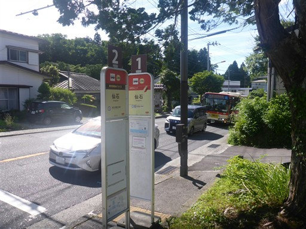
金時登山口近くにあるトイレに立ち寄る。ここから金時山に登るルートは閉鎖されているようだ。
もともと公時神社から登る予定だったので、影響はない。
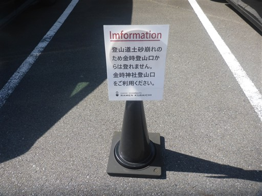
しばらく車道を歩くと公時神社入口に到着する。
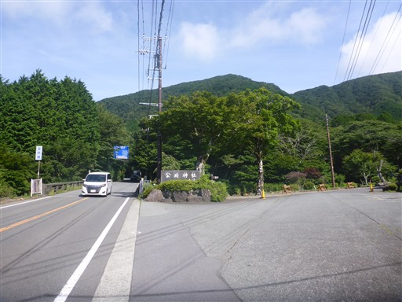
神社前の駐車場。小さな駐車場だがまだ空きはありそうだ。
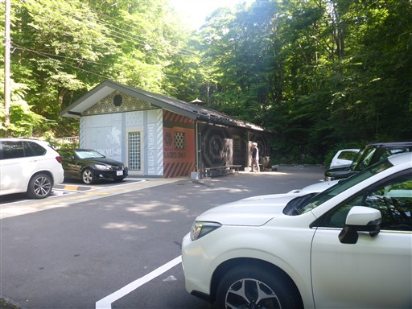
公時神社に到着。
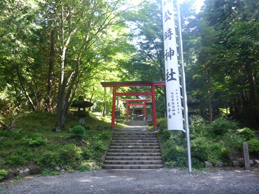
本殿。この神社は坂田公時（金太郎）を祭神として祀っている。

ここから登山道が始まる。
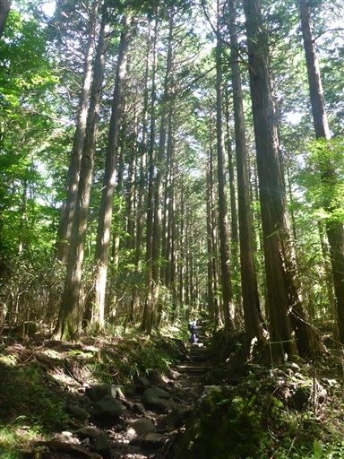
車道を横切る。この道路は2021年から一般車が通れるようになったらしい。
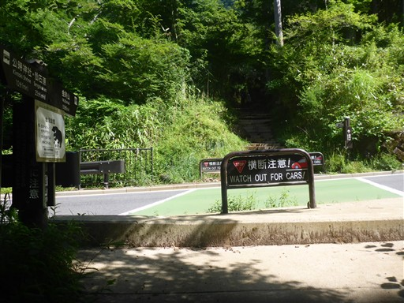
巨大なユリ。
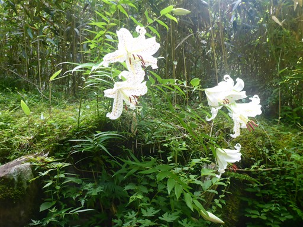
金時宿り石。石は1931年に突然割れたらしく、割れた音は仙石原の村中に響き渡ったと書かれている。
一体どんな音が鳴ったのだろう？
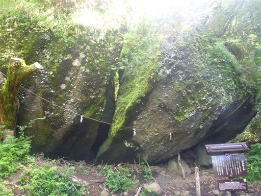
歩きやすい登山道が続く。
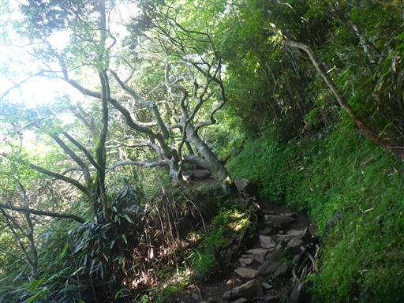
シモツケソウの花があちらこちらに咲いている。
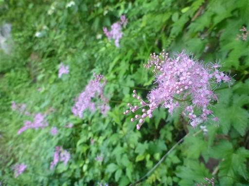
少し展望が広がる。箱根の山々が見渡せる。
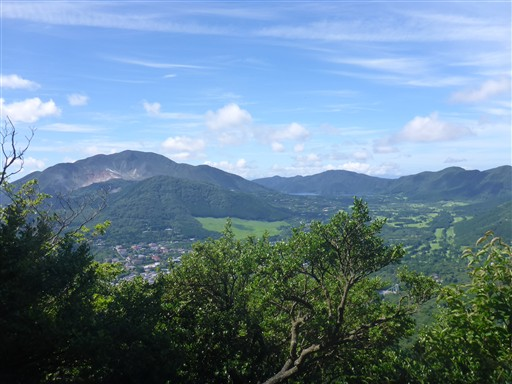
稜線に到達。ここから金時山を往復する。
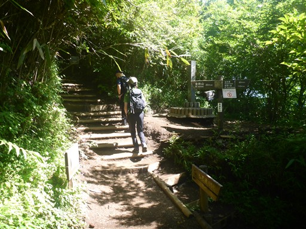
緑の中の美しい道。セミの声が鳴り響いている。
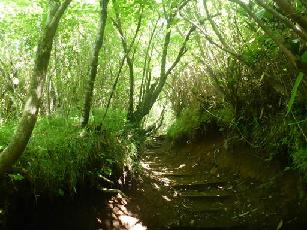
金時山山頂に到着。標高1212m。
真夏の炎天下だけれど、ちゃんと富士山が見えた。

箱根の山々。中央の神山、外輪山、その間の芦ノ湖が見えている。
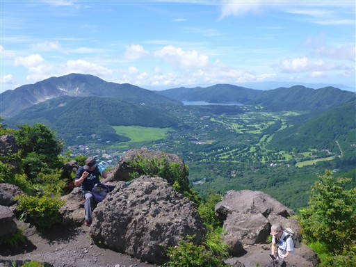
山頂は賑わっているが、大混雑というほどではない。
この炎天下では登ってくる人はそんなに多くないだろう。
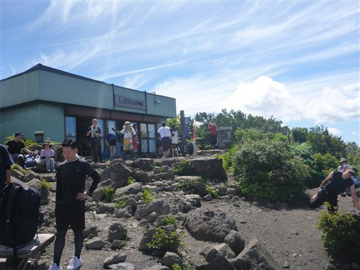
金時娘の茶屋。ドアは開いているが、営業はしていないようだ。
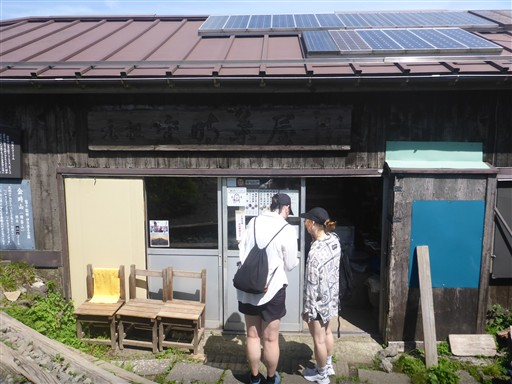
まだ9時代なので昼食休憩はとらず、富士山を眺めたら出発する。
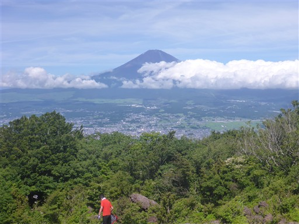
公時神社からの道との合流点まで戻ってくる。
登ってくる人とのすれ違いが大変だったが、ここからは少しマシになるだろう。
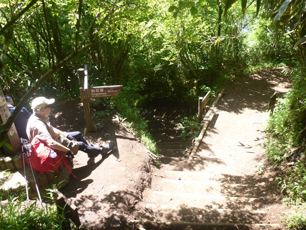
ここから明神ヶ岳までは、距離は長いがアップダウンのほとんどない楽な道が続く。
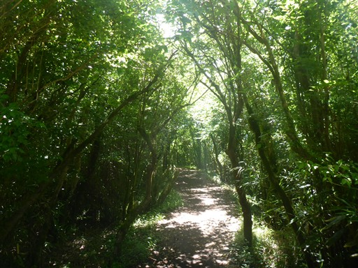
箱根特有の笹が生い茂る道。
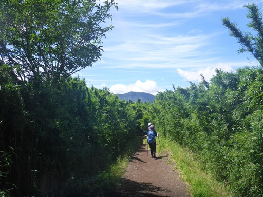
矢倉沢峠に到着。この先で左折したところに駐車場があるようだ。
こんなところに登山口があるなんて知らなかった。
さきほど横断した道路が一般解放された際に整備されたのだろう。
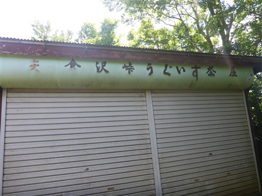
はるか先の明神ヶ岳まで分岐点がないので、ここからさらに人通りが少なくなる。
密集した笹は、日差しはさえぎらないけれど風は完全にさえぎるため、かなり暑い。
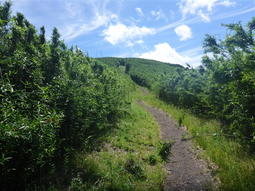
眼下の笹原が美しい。金時山の雄姿が目の前に広がる。

密笹の中にある獣道。どこに通じているのだろう？
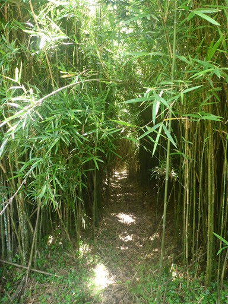
快適な登山道が続く。富士山の頭が見えてきた。

毛虫発見。調べてみたらタケカレハという蛾の幼虫のようだ。
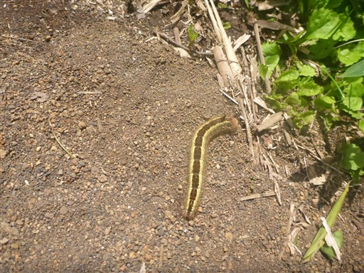
登山道は稜線を外れてトラバース道になる。笹原もなくなって樹林帯になる。
2007年に矢倉沢峠～明神ヶ岳を歩いたはずだが、この辺りは昔すぎてあまり記憶にない。
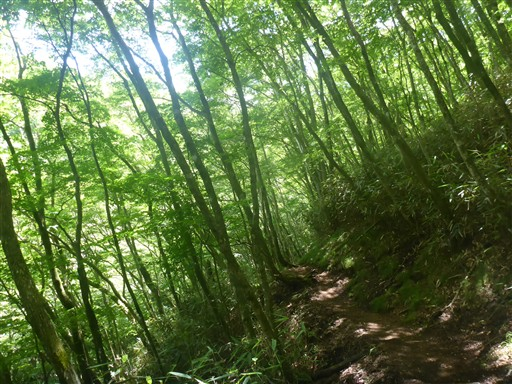
火打石岳の標識。トラバース道を歩いてきたので、山頂はこの先の藪の中なのだろう。
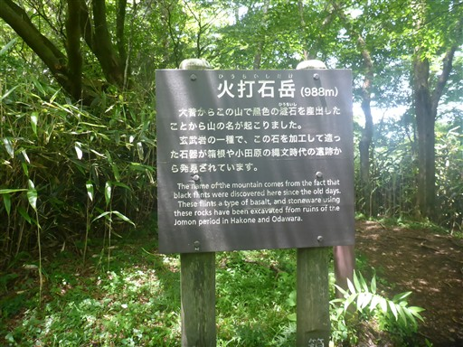
丹沢方面は雲が多そうだ。本日は塔ノ岳に行くか金時山に行くか迷ったが、
こうなることが予想できたので箱根に足を向けた。
夏の丹沢は、快晴予報でも昼時に晴れる気がしない。
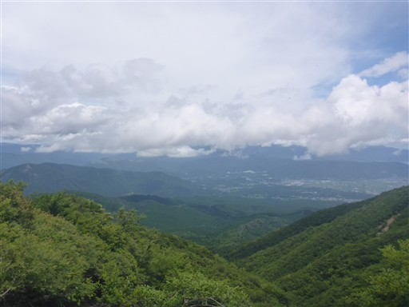
明神ヶ岳が見えてきた。長い尾根道もあともう少し。
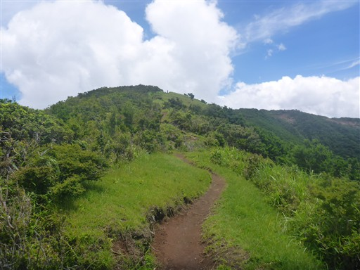
明神ヶ岳に到着。標高1169m。
山頂は程よい登山者の数だ。
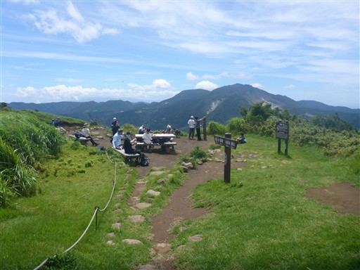
山頂からは正面に神山が見える。
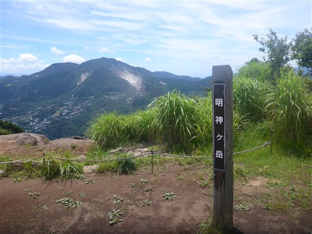
富士山と金時山。あそこからここまで歩いてきた。
富士山は中腹が完全に雲に覆われてしまった。
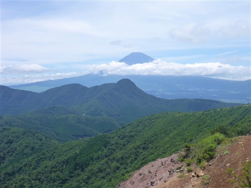
軽く昼食休憩を取ったら山頂出発。
眼下に真っ青な海が見える。明日は海に行く予定だ。
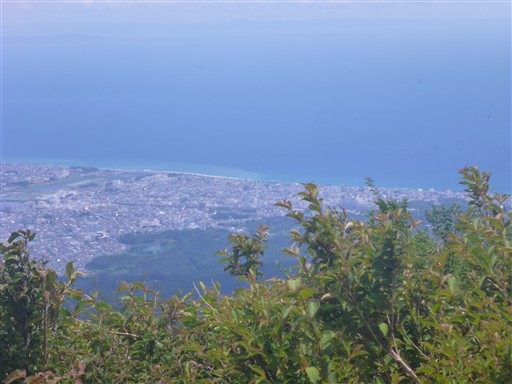
巨大なバイケイソウの花。相変わらず美しくない。
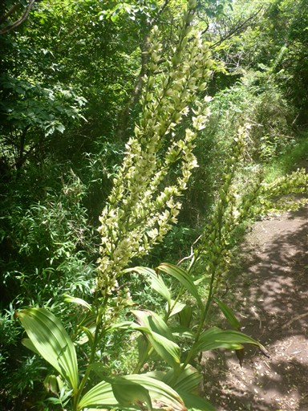
摂政宮殿下大雄山行啓御通路記念碑。
皇族が歩いただけで、こんな大きな石碑を立てたのか…
大正11年と書かれている。
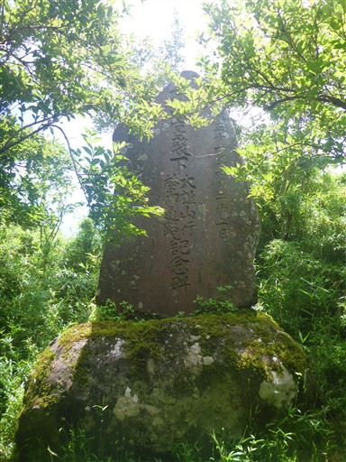
下山道との分岐点。明星ヶ岳から箱根湯本に向かうか、宮城野に下山するか、
両方のプランを考えてきたが、まだ時間が早いのと、疲れてもいないので
明星ヶ岳に向かうことにする。
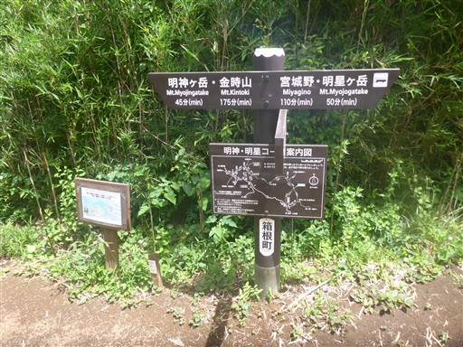
ここからはさらに人通りが少なくなる。それでもトレイルランナーや登山者と時々すれ違う。
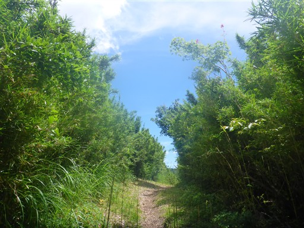
学校林跡地。当時の中学生が植林したらしい。
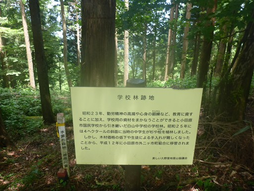
明星ヶ岳手前は広い草地になる。
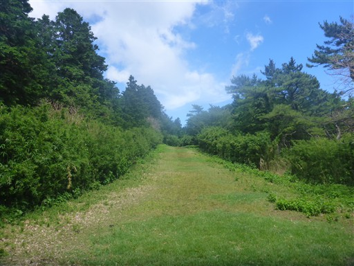
今まで見かけなかった松の木が生えている。

明星ヶ岳山頂に到着。標高924m。
小さな祠と石碑があるだけで展望は全くない。
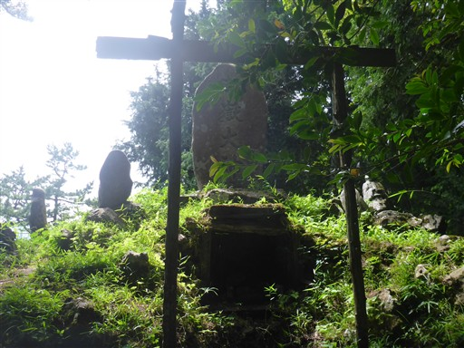
ここから塔ノ峰に向かう。だいぶ歩いたので見える景色も変わってくる。
左から二子山、箱根駒ヶ岳、神山だ。
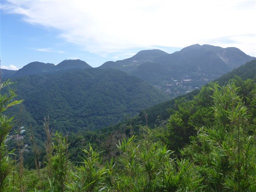
周囲は植林地帯になってくる。
歩いていて楽しい登山道は明星ヶ岳辺りまでで、そこから先は冴えない景色になっていく。
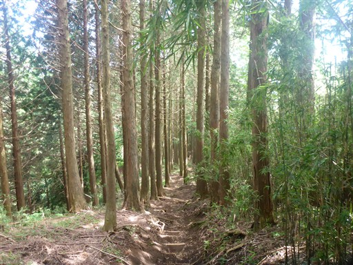
塔ノ峰に向かうショートカット道。
登山道ではないが、踏み跡はあるためそちらに向かう。
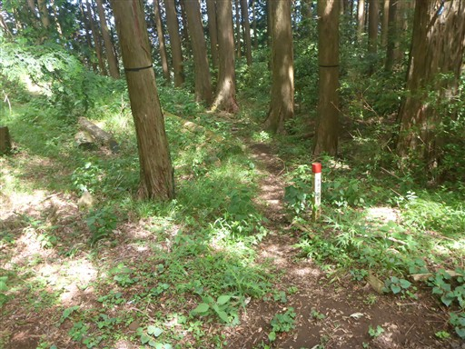
誰かが取り付けたピンクリボン。
道は細く若干危険個所もあるが、問題なく歩ける。
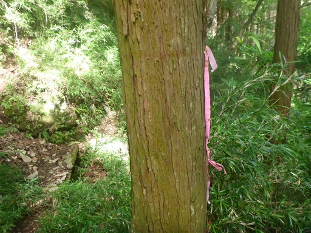
車道に到着。
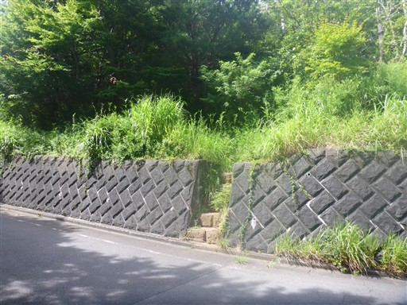
ここから塔ノ峰に向かう。
ここが塔ノ峰との最低鞍部なので、大したショートカットにはなっていない。
車道歩きを少し省けた程度だ。
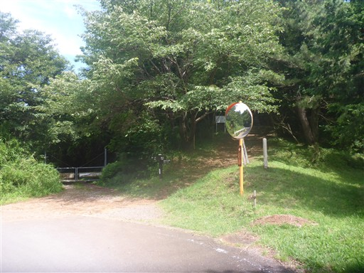
しばらくは登りが続くが、標高差は100mもないので楽な登りだ。
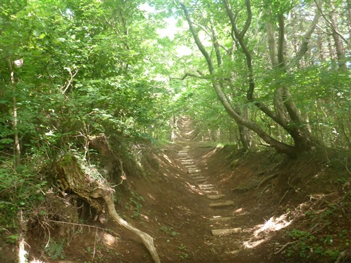
塔ノ峰の山頂に到着。標高566m。
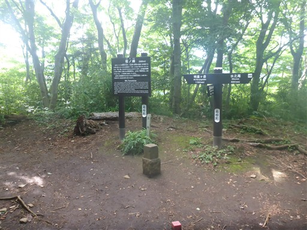
あとは植林地帯の中の道を下るのみ。
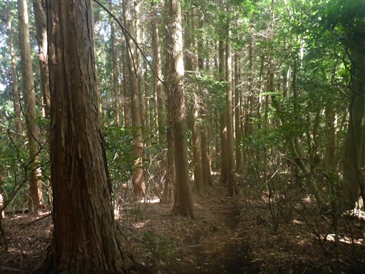
阿弥陀寺に下山。
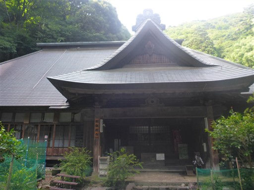
本堂の前にあるのは銅鑼ではなく謎の円盤。
百万遍転輪というらしく、紐を引っ張ると回転して数珠が落ちてくる。
こんな代物は初めて見た。
参道を下っていく。まだ駅までは少し距離がある。
古そうな山門を潜る。
無事下山。
車道を歩いて駅を目指す。
この辺りはフォレストアドベンチャーの敷地のようだ。
息子が小学生になったら行こうと思っていたが、コロナやらなんやらで
結局行けずじまいのまま小学6年生になってしまった。
箱根湯本の温泉街が見えてきた。
箱根湯本駅到着。標高95m。
観光客がたくさんいる。
土産物屋が並んでいる。
足湯でも200円かかるのか…。さすがは箱根だ。
今回は箱根の長い縦走路を歩くことができた。
明星ヶ岳から先は少々つまらない道だったが、全般的にアップダウンが少なく、
ところどころで展望が広がる良い道だったと思う。
最初は軽い山登りのつもりで計画を立て始めたが、なんだかんだでロングコースを歩いてしまった。